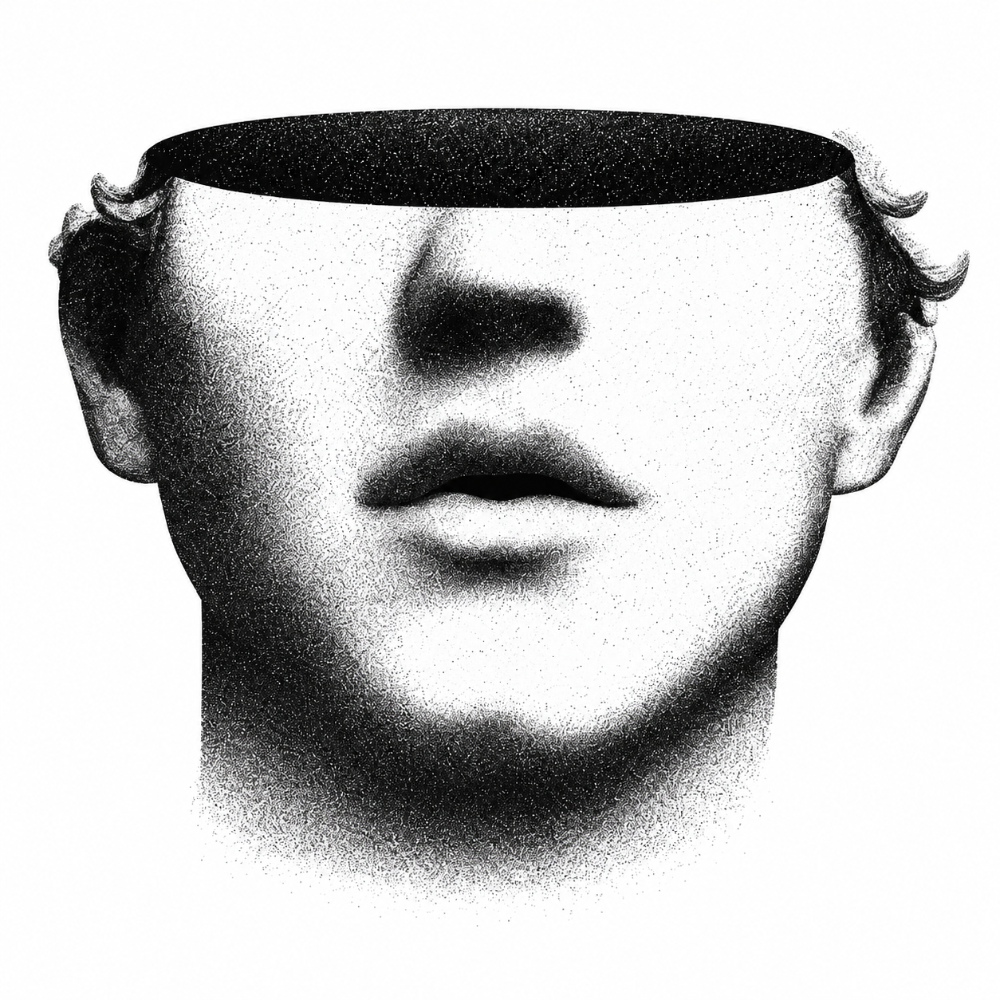

Meet the developer
Meet NYRC,
Not your regular companion.
Download NYRC
macOS · Windows · Linux
/
1.0.0-rc.1
Timers & reminders
Pocket
Aliases & modes
Optional AI
Google Calendar
Desktop tools
Developer events
Body development

Useful when you need him. Alive when you don’t.
Local first. AI optional. Your companion.